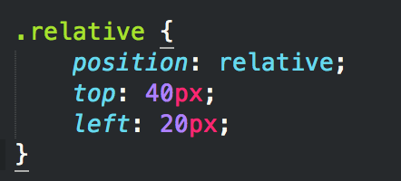
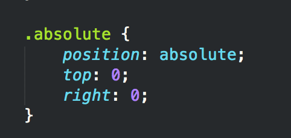
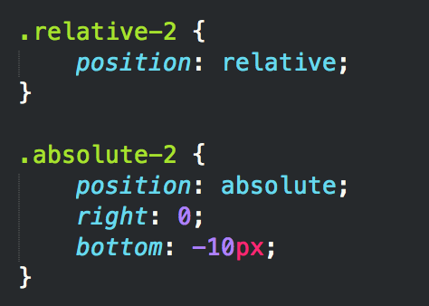

The CSS position property gives us alternate rules for positioning elements. If no position property is declared, it would be the default position which is static. There are four different positioning properties (static, relative, absolute, and fixed) and along with them you can use the properties of top, right, bottom, and/or left to set the position values.
The default position for all elements. Means the element is not positioned and falls in the natural flow of the document.
I am a static box
This static div has no position property and is considered static. It falls where it would naturally go.
Uses the properties, top, right, bottom, or left along with an amount (positive or negative) value to offset the element from where it naturally occurs in the document, making it relative to it's original, static position. The surrounding elements are not affected at all, and sometimes they overlap.
I am a relative box
This relative div has a relative position and a top value of 40px and a left value of 20px. That moves it down 40px and to the right 20px from where it would have been positioned.
The element this is applied to is then removed from the document flow and placed exactly where you specify it to go. Again, use top, right, bottom, or left properties. It is relative to the nearest positioned ancestor. If it has no positioned ancestors, it’s positioned relative to the body of the document.
I am a static box now. Make me absolute.
The above box has no relative parent. Therefore it will be offset with respect to the body when positioned absolutely.
Once the element has been positioned absolutely it's taken out of the flow of the document and it doesn't leave a gap or space in it's original position. It also doesn't affect the flow of subsequent items.
If you set a position relative to a parent element, and a position absolute to a child element, that child element’s position is absolute within the parent element.
I am a relative box
I am a absolute box within a relative container.
If the first box's position was position: static; its absolutely positioned child would escape and would be positioned relative to the document body.
If an element positioned fixed, it will be relative to the viewport and will always stay in the same place, even when the page is scrolled. Properties top, right, bottom, and left are used.
Like absolute positioning, fixed positioning takes the element out of the documnet flow and don't leave a space where it would have been. So, if you use a fixed header or footer make sure to leave room for it. Put a margin on the container or body.
I am a static box. Make me fixed.
Fixed position with mobile browsers can be buggy.